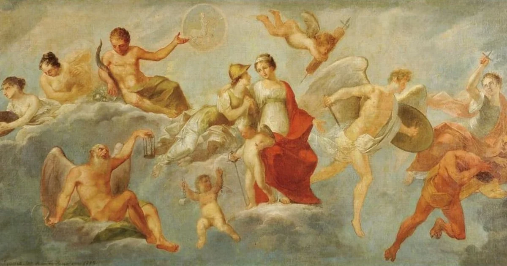
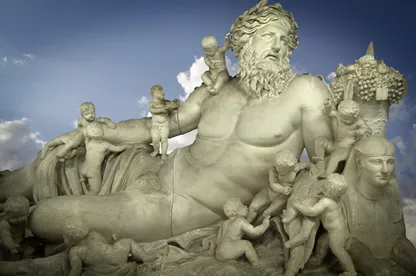
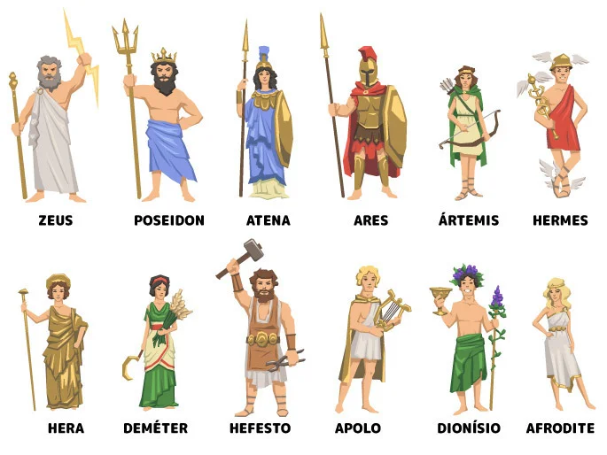
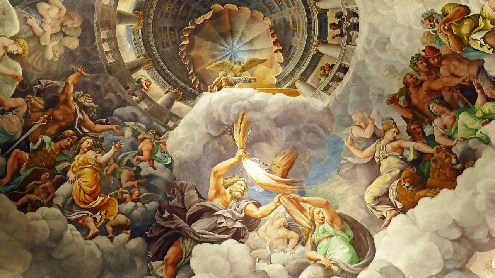
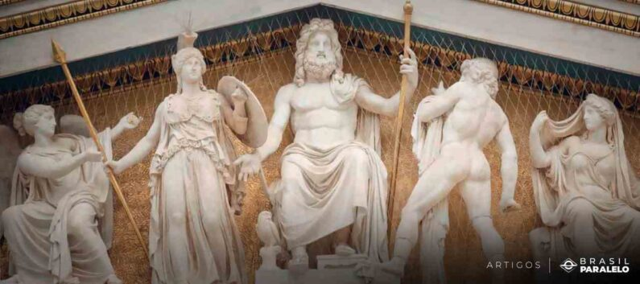

A mitologia grega tem suas raízes nas crenças e tradições religiosas das civilizações pré-helênicas da Grécia Antiga, que datam de milhares de anos atrás. Com o tempo, essas tradições foram absorvidas e transformadas pelas culturas que vieram a habitar a região, incluindo os micênicos e os dórios. Acredita-se que muitos dos mitos gregos tenham sido influenciados por culturas anteriores, como a minoica e a micênica.
mitologia grega oferece várias explicações sobre a origem do universo, dos deuses e do mundo natural. O poema épico "Teogonia", atribuído a Hesíodo, descreve a origem e genealogia dos deuses, desde o início do cosmos até o estabelecimento do domínio dos deuses olímpicos liderados por Zeus.
Os deuses e deusas da mitologia grega habitavam o Monte Olimpo, uma montanha mítica localizada na Tessália. O panteão grego era composto por várias divindades, cada uma responsável por aspectos específicos do mundo e da vida humana. Alguns dos principais deuses incluem Zeus (deus dos céus e rei dos deuses), Hera (rainha dos deuses e esposa de Zeus), Atena (deusa da sabedoria e da guerra justa), Apolo (deus da luz, da música e da profecia), Artemis (deusa da caça e da natureza selvagem), Afrodite (deusa do amor e da beleza), Poseidon (deus do mar), entre outros.
A mitologia grega está repleta de heróis e heroínas semideuses que realizaram feitos extraordinários e enfrentaram desafios épicos. Entre os mais famosos estão Hércules (ou Héracles), conhecido por seus doze trabalhos lendários, Perseu, que derrotou a Medusa, Teseu, que enfrentou o Minotauro no labirinto de Creta, e Ulisses (ou Odisseu), cujas aventuras durante sua jornada de volta para casa após a Guerra de Troia são narradas na "Odisseia" de Homero.

Os mitos gregos abrangem uma ampla variedade de histórias e lendas que explicam a origem de fenômenos naturais, rituais religiosos, tradições culturais e características geográficas. Eles também exploram temas universais como amor, inveja, vingança, amizade e redenção. Além dos mitos mais conhecidos envolvendo deuses e heróis, há também uma infinidade de mitos menores que abordam figuras menos proeminentes e eventos menos célebres.
A mitologia grega exerceu uma influência significativa sobre a cultura ocidental, desde a antiguidade até os tempos modernos. Suas histórias e personagens foram fonte de inspiração para inúmeras obras de arte, literatura, música, cinema e teatro ao longo dos séculos. Além disso, muitos conceitos e ideias da mitologia grega foram incorporados à linguagem, à psicologia, à filosofia e à ciência, influenciando profundamente a forma como entendemos o mundo e a nós mesmos.
pagina inicial
<--
form
-->